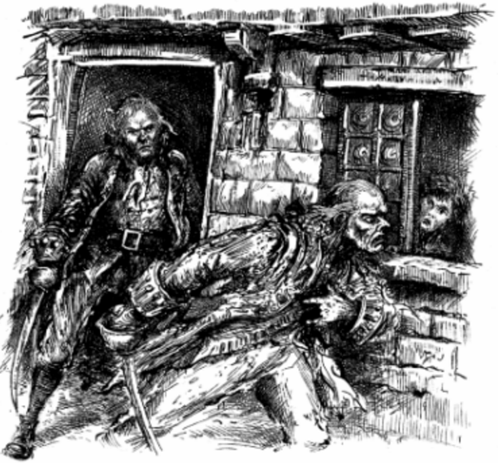
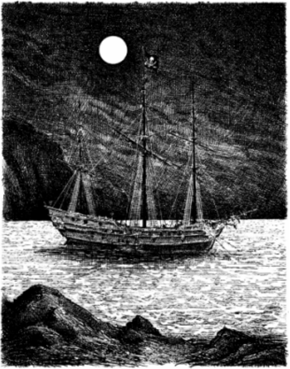

2
Black Dog
One January morning, the captain got up early and walked down to the beach. It was a cold winter’s day with the sun still low in the sky. My mother was upstairs with my father, who was now very ill. That year the winter was long and hard, and we knew my father would not see another spring.
I was getting the table ready for the captain’s breakfast. Suddenly, the door on the inn opened and a man stepped inside. I had never see him before. He wore a sailor’s short sword by his side, and I notice he had only three fingers on his left hand.
I asked him what he wanted and he said, ‘I’ll take a glass of rum.’ But before I could fetch it, he told me to come near him. ‘Is this table for my old friend Bill?’ the stranger asked, with a terrible smile.
I told him I did not know his friend Bill and the breakfast was for a man who was staying at the inn. ‘We call him the captain,’ I said.
‘Does he have a sword cut on his face?’ he asked.
‘Yes,’ I said.
‘That’s Bill,’ said the stranger. ‘Is he here?’
I told him the captain was out walking, and the man waited, like a cat waiting for a mouse. I did not like the look on his face and was sure the captain would not be pleased to see him.
When the captain came back, the man pulled me behind the door. the captain opened the door and walked across the room.
‘Bill,’ said the stranger.
the captain turned quickly and saw us. The colour went from his face and he looked old and sick. ‘Black Dog!’ he said. He stared at the stranger. ‘And what do you want?’
‘I’ll have a glass of rum,’ said Black Dog, ‘then you and I’ll sit and talk like old friends.’
I fetched the rum and they told me to go away. I went out of the room, but the voices became louder.
‘No, no, and that’s an end of it!’ I heard the captain shout. ‘If one is caught, we’ll all be caught!’
There were more shouts, and the sound of the table crashing over. Next, I heard the sound of swords, then out ran Black Dog, with blood running down his shoulder. He ran out of the inn and along the road. In a few seconds, he had disappeared from sight.
the captain watched him go, then said, ‘Jim, quick! Bring me rum.’
He turned and went back into the inn, but he could only just stand on his feet. I realized he was feeling ill and ran to fetch the rum. Then I heard him falling and hurried back to find him on the floor.
My mother heard the noise and came downstairs. We lifted the captain’s head. His eyes were closed and his face was a terrible colour.
At the moment Dr Livesey arrived to see my father. He looked at the captain and said to my mother: ‘His heart can’t take much more of this. I told him drinking rum would kill him, and it nearly has.’
the captain opened his eyes and tried to sit up. ‘Where’s Black Dog?’ he asked.
‘There’s no Black Dog here,’ said the doctor. ‘Get on your feet and I’ll help you to your bed.’
Previous Chapter Next Chapter